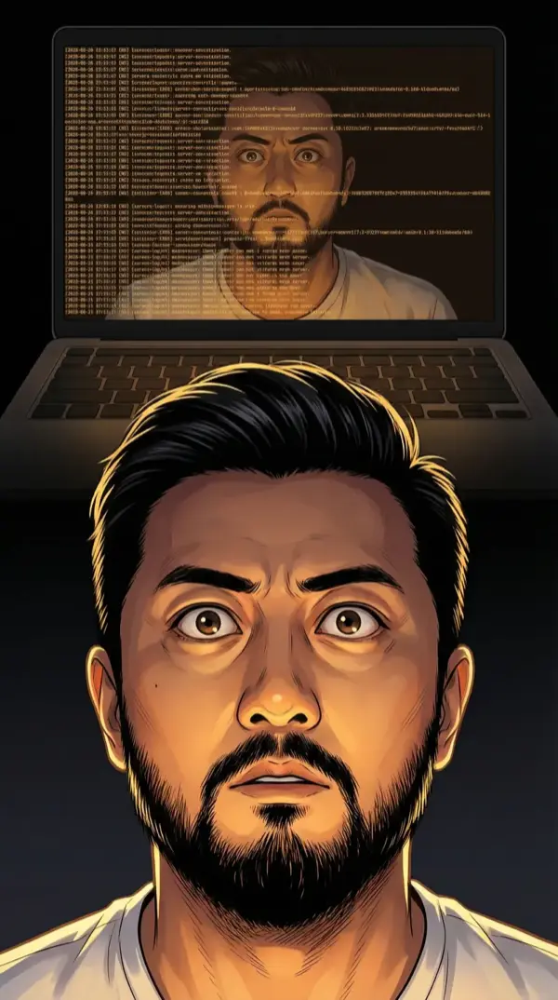
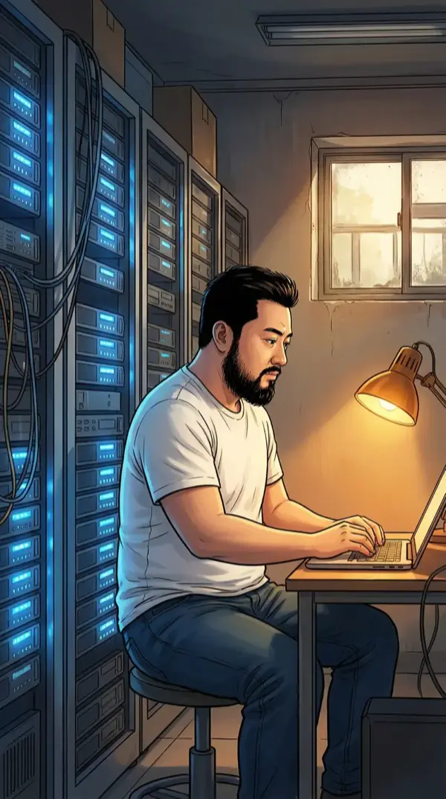
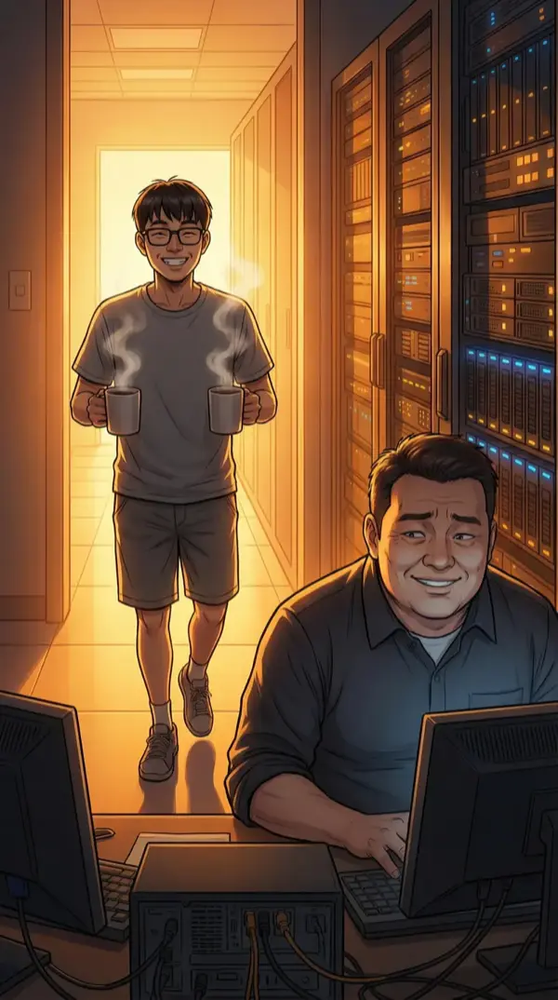
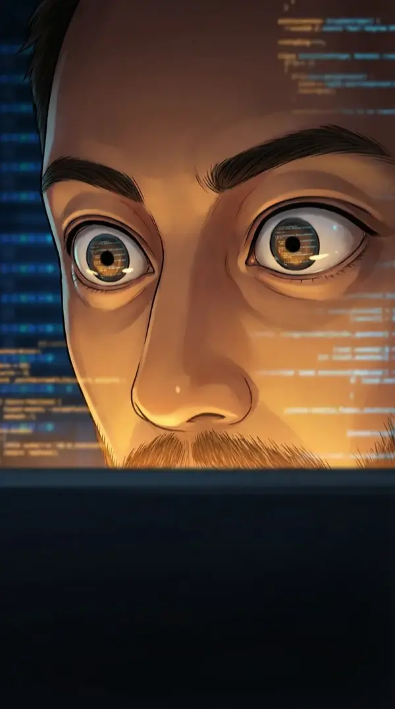
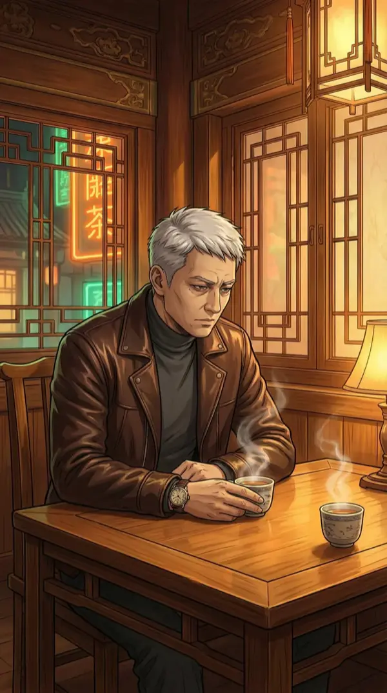
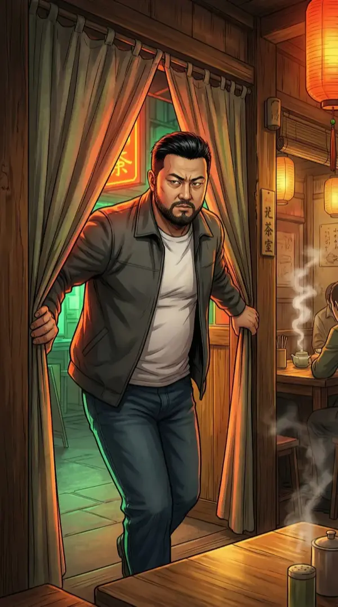
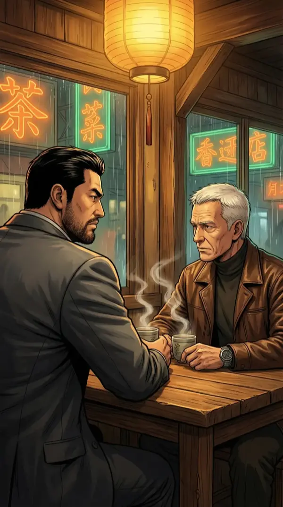
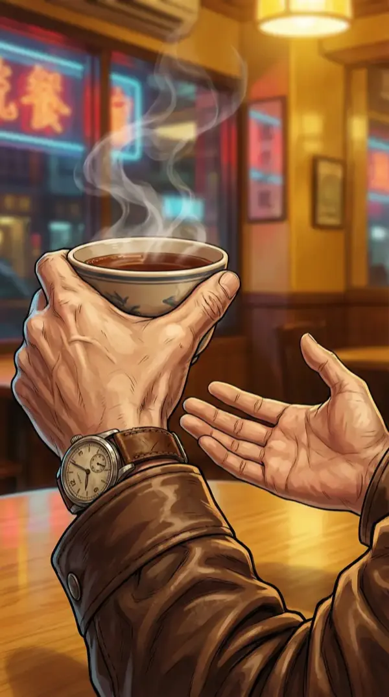
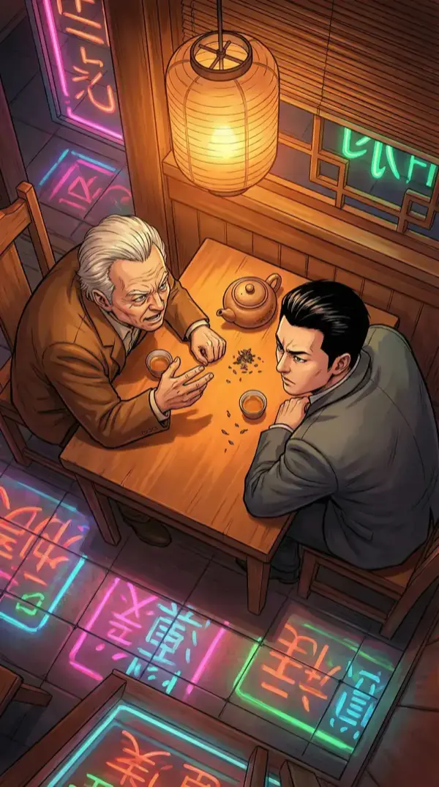
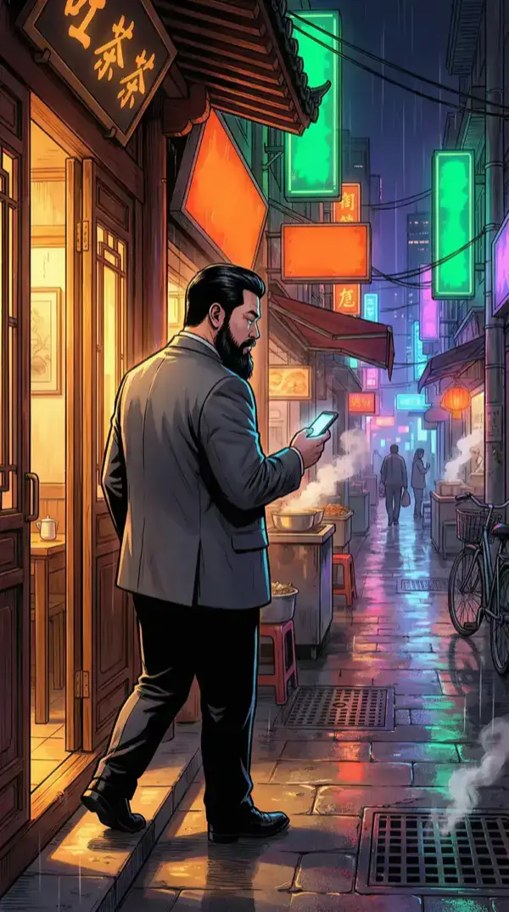

2010年9月，北京五道口。清晨六点，整条街还没醒过来，只有三楼那间办公室的灯亮了一整夜。
盾甲上线的第一个早晨。
我坐在办公桌前，手里攥着那部翻盖手机。屏幕上那条匿名短信的光，比窗外的朝阳还刺眼。
"你应该看看自己的合伙人。"
我已经把这句话读了一百遍。每读一遍，意思就往不同的方向偏一点。
合伙人。我有几个合伙人？
陈磊——从第一行代码开始就在我身边的技术搭档。
张维——启明星基金的创始人，第三个穿越者。
这句话指的是谁？
陈磊还在沙发上睡着。昨晚通宵上线，他坚持到凌晨三点才撑不住。我给他披了件外套——这已经成了我们的固定节目。
我看着他安静的睡脸，第一次觉得这张脸让我不安。
匿名短信说"看看自己的合伙人"。你怎么处理这个信息？
我打开盾甲的后台。上线第一天的数据开始刷新——用户增长曲线、API响应时间、错误率。
每一项指标都在合理范围内。不，不是合理——是完美。
完美到不像一个三人团队第一天上线能做出来的水平。
陈磊翻了个身，突然坐起来。看到我盯着他，愣了一秒："你在审犯人吗？"
我："看你睡觉流口水，想拍下来发朋友圈。"
陈磊："2010年没有朋友圈。"
我心里一紧——差点穿帮。
"我说的是……QQ空间。"
陈磊狐疑地看了我一眼，然后去找拖鞋了。

陈磊去洗脸的时候，我打开了系统日志的详细模式。
凌晨两点到四点之间——陈磊睡着之后——有十七次后端优化提交。缓存策略调整、数据库索引优化、负载均衡权重修改。
提交者的IP，不是我们团队任何人的。
但这些优化的风格……我盯着屏幕，瞳孔缩小。

下午三点。我坐在公司的小机房里，面前是两台服务器和一盏台灯。
服务器的蓝色指示灯一闪一闪，像某种密码。台灯的暖黄光把我的影子投在墙上，拉得很长。
十七次幽灵提交。我要搞清楚它们是从哪来的。
层层追踪。提交的代理链比蜜罐的访问者更复杂——五层跳板。
但我不需要追到源头。我只需要看代码本身。
每个程序员都有自己的"笔迹"——变量命名习惯、缩进风格、注释方式。这些提交的笔迹，我越看越觉得眼熟。
不是陈磊的。也不是我认识的任何人的。
但架构思路——像是从2019年之后才有的范式。跟观���数据服务器上的那套系统，出自同一个人。
我拨通了张维的视频。
他接得很快。背景是他那间简朴的办公室，穿着浅蓝色衬衫，看起来比昨晚冷静多了。
"昨晚数据不错。"他先开口，语气像在聊天气。
"嗯，不错。"我顺着他的话说，然后突然转向："你听说过观澜数据吗？"
张维的手停了一下。只有零点几秒——一个普通人看不出来的停顿。但我看到了。
"观澜数据？"他重复了一遍，像是第一次听到这个名字。"什么公司？"
"深圳南山区注册的。法人叫周明远。"我盯着屏幕里他的眼睛，"你投过的公司里，有没有这个名字？"
张维的眉毛微微皱了一下。这次的停顿更长。
"我回头查查。"他说。然后迅速转了话题："盾甲的商业化方案你想好了吗？下周可以约个时间——"
张维在回避。你要继续追问还是放他走？
挂断视频后，我盯着变黑的屏幕上自己的倒影。
张维知道周明远。这一点现在几乎可以确定。但他不愿意说——这意味着他们之间有某种关系，而这种关系是他不想让我知道的。
林晓蝶说过："观澜数据。我知道这个名字。"
张维说的是："我回头查查。"
一个承认，一个否认。到底谁在说真话？

陈磊端着两杯咖啡走进机房，看到我面色凝重地坐在服务器前。
"哥，你这个表情，要么是服务器炸了，要么是你发现自己写的代码被别人写得更好了。"
我接过咖啡："两个都有点。"
陈磊差点把自己那杯洒了："什么叫两个都有点？！服务器真的炸了？！"
"没炸。比炸了更复杂。"
"比服务器炸了更复杂的事情不存在。"陈磊一脸认真。

陈磊走后，我继续看那些幽灵提交的代码。
越看越心惊——不是因为代码写得差，而是写得太好了。每一行都精准地解决了我们系统的瓶颈，像是有人提前知道哪里会出问题。
不。不是"像是"。
这个人确实提前知道。因为他从未来回来的时间，比我们所有人都早。
周明远。第一个穿越者。他在帮我？
手机震了一下。未知号码。
一串数字——GPS坐标。后面跟着一个时间：今晚七点。
我把坐标输进地图。北京东城区，鼓楼附近——一家叫"观止"的老茶馆。
名字起得很有意思。观止。叹为观止的观止。
傍晚七点，北京东城区。
九月的黄昏把整条街染成了琥珀色。沿街的霓虹灯刚刚亮起来，橘红色和翠绿色的光交错在青石板路上。
"观止"茶馆的门口挂着一盏暖黄色的灯笼，在霓虹里显得格外古朴。
我换了件深灰色夹克，把手机关了飞行模式。深呼一口气，推门进去。

角落那张桌子，有个人已经在了。
四十五岁上下，偏瘦但精神头很足。花白的短发打理得很整齐。穿一件深棕色皮夹克，里面是深灰色高领毛衣。手腕上的老式机械表在灯光下反着光。
他没有抬头看我。低着头看茶杯，像是在跟茶叶聊天。
桌上两杯茶。一杯在他面前，一杯在我将要坐的位置。
他知道我会来。

我走过去，坐下。
他终于抬起头。眼神疲惫但锐利，像一把用了很久但依然锋利的刀。
"茶凉过一次了。"他说。声音不高，很平稳。"我热了一遍。你比我预计的晚了八分钟。"
"我在外面观察了八分钟。"我说。"确认你只有一个人。"
他笑了一下——很淡，但真诚。"做安全出身的人，果然不一样。"

两个人，一张桌子，两杯茶。窗外霓虹的橘红色和翠绿色光影打在桌面上，像某种密码。
"你知道我是谁。"我开门见山。
"你知道我是谁。"他用完全一样的句式回了一句。
我们对视了三秒。
"周明远。"我说。
"朱江。"他说。"盾甲做得不错。蜜罐也很聪明——四层追踪，在2010年算超前了。但你追到的IP不是我故意暴露的，就不是我了。"
"你什么时候来的？"我问的是穿越的时间。
周明远看了一眼手腕上的机械表——那块表的秒针走得很稳，像心跳。
"2005年3月17号。凌晨两点。"他的声音很平，像在报一个快递单号。"我以为只有我一个人。直到2009年年底，张维出现了。然后是那个女人。然后是你。"
"你观察了所有人。"
"五年。"他说。"五年时间，足够看清很多东西。"
我端起茶杯，没喝。"昨晚凌晨两点到四点，有人给盾甲做了十七次后端优化。是你。"
这不是问句。
周明远的手指在茶杯边缘微微收紧——我注意到他指关节发白了一瞬。
"你的蜜罐抓到了访问痕迹。"他没有否认。"但优化不是我被你发现的原因。我是故意让你发现的。"

"为什么？"
他终于放下茶杯，身体微微前倾。手表在灯光下一闪。
"因为你是四个人里面唯一一个在做防御的。"
"什么意思？"
"张维在做投资布局。林晓蝶在做技术卡位。只有你——做了一套安全系统。而且你在安全系统里藏了蜜罐。你在防备同类。"
他直视我的方向："一个在防备同类的人，才值得我出现。"

周明远主动现身，说你"值得他出现"。你怎么判断他的意图？

周明远喝了口茶，放下杯子。窗外的霓虹灯在他花白的头发上映出忽明忽暗的光。
"我今天找你，不是为了叙旧。"他的声音突然低了半度。"是因为张维。"
"张维怎么了？"
"在我穿越回来的那条时间线上，张维2012年才开始做投资。但在这条线上，他2009年底就到了——提前了三年。而且他现在做的事，不只是投资。"
我端起茶杯。这次真的喝了一口。
"他在布一个局。"周明远说。"一个从2009年就开始布的局。而你的盾甲——你以为是你自己做出来的。但你有没有想过，你为什么能做出来？"
走出茶馆的时候，整条街的霓虹都亮了。我站在橘红和翠绿的光影交错中，觉得脚下的路比来时长了十倍。
手机震动。陈磊的消息。
"哥，你快回来看看。我在清理服务器冗余文件的时候，发现一段被加密的代码。解开之后……里面的注释时间戳是——"
2027年11月3日
第七章 · 完
下章预告——
2027年的代码藏在盾甲里——是谁写的？周明远？张维？还是更让人不安的答案？
"你为什么能做出来？"——周明远这句话到底什么意思？
而匿名短信"看看自己的合伙人"——发送者，可能是在场所有人中最意想不到的那个。
四方博弈，两杯凉茶，一段来自未来的代码。